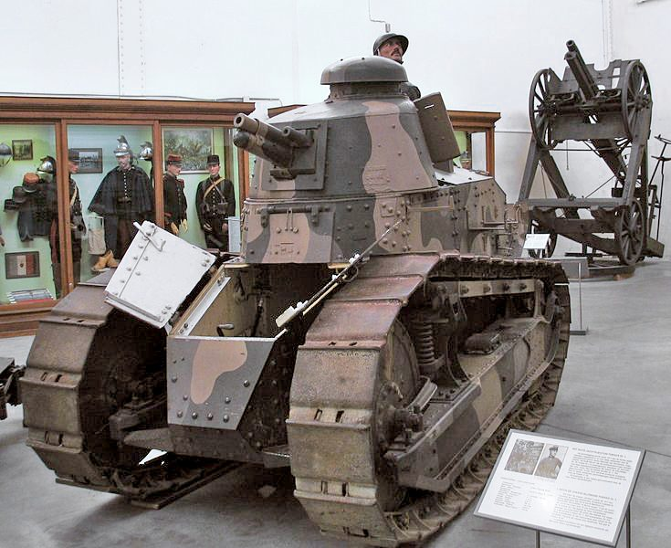
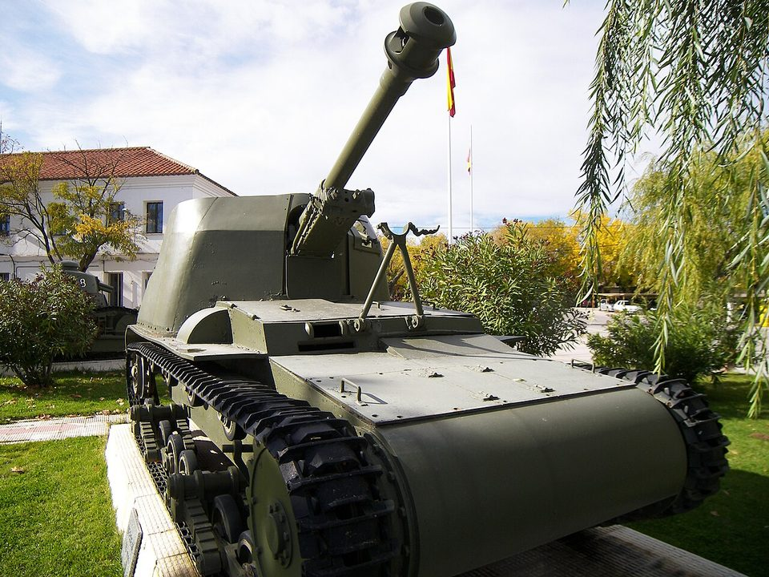
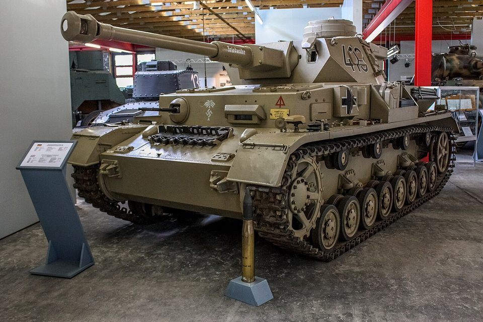
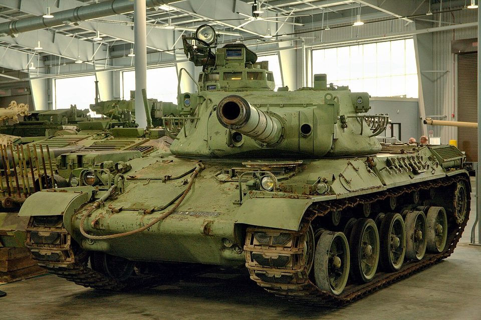

Todos los tanques › Artículos › Los tanques y España
Lista
Los tanques y España
Los carros de combate que usó, fabricó o diseñó España, desde los Schneider de la guerra del Rif hasta el Leopardo 2E fabricado en Sevilla.
Carros de la enciclopedia relacionados con España: los que usó su ejército, los que combatieron en la Guerra Civil y los que se diseñaron o fabricaron aquí.
 1 · Francia
1 · FranciaSchneider CA1
1921
Junto al Renault FT, el primer carro del ejército español que combatió, en Marruecos.

 3 · Unión Soviética
3 · Unión SoviéticaT-26
1936
La Unión Soviética envió 281 a la República. Fue el carro más eficaz de la Guerra Civil.



7 · EspañaVerdeja
1939
El carro diseñado en España por el capitán Félix Verdeja, que nunca se fabricó en serie.



